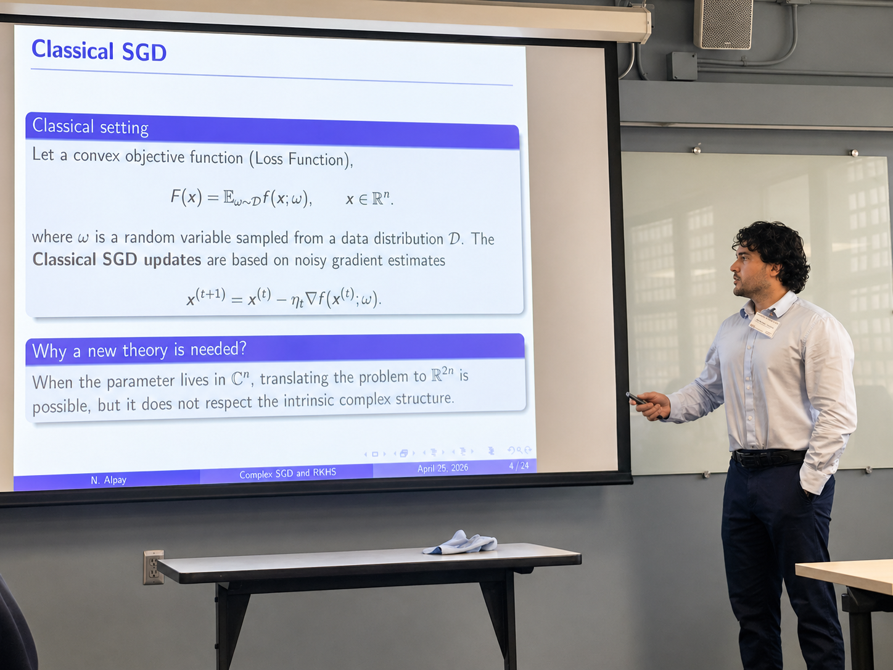
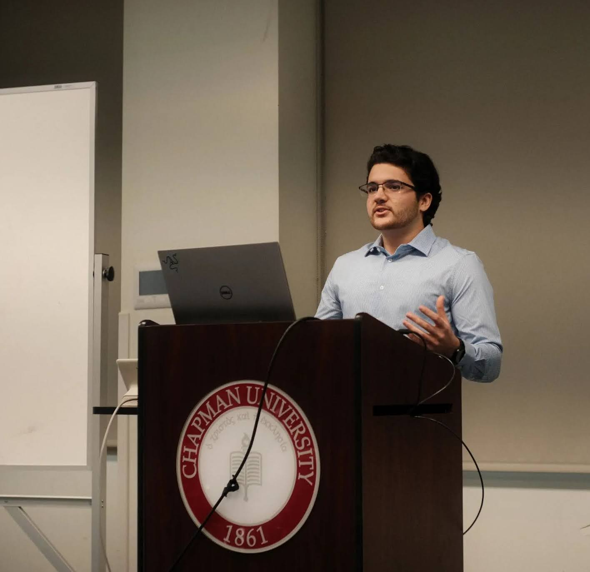
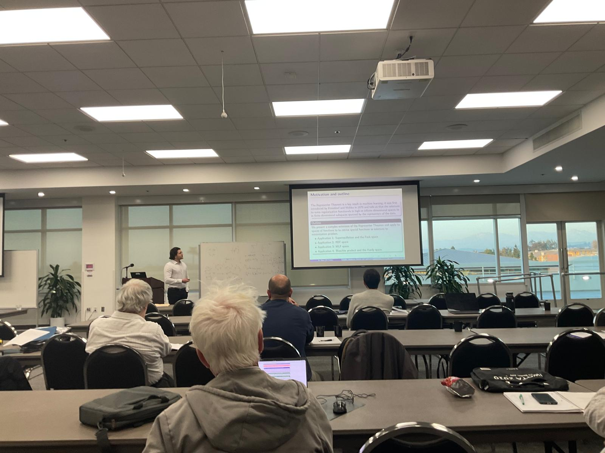
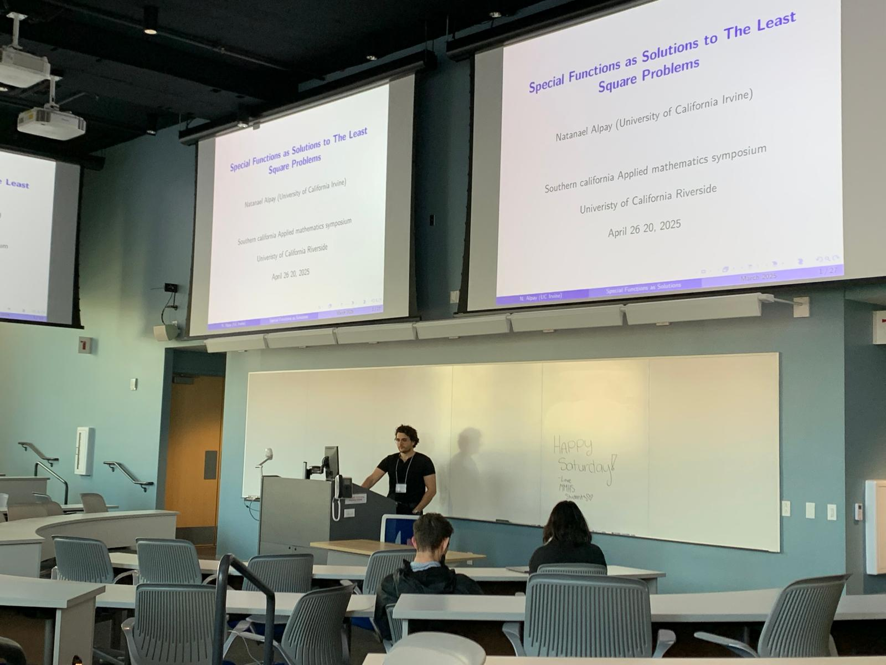

In addition to math research I have also looked and worked on projects in different topics




Graduate Student in Mathematics at the University of California, Irvine.
Undergraduate from Chapman University. BS in Mathematics, Physics and Computer Science. BA in French.
Email: nalpay@uci.edu